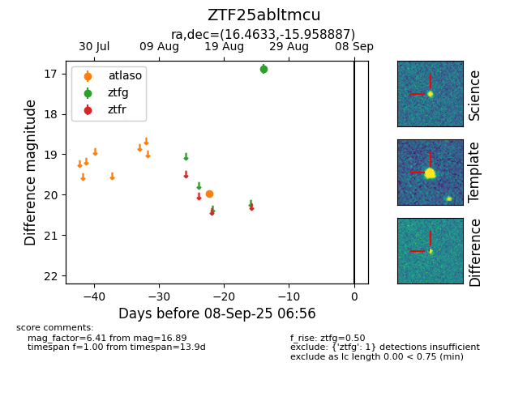

FINK: ZTF25abltmcu
Lasair: ZTF25abltmcu
ALeRCE: ZTF25abltmcu
ZTF25abltmcu (ztf,fink)
equatorial (ra, dec) = (16.4633,-15.95889)
galactic (l, b) = (140.3323,-78.34075)

last atlaso=19.98, ztfg=16.89
1 atlaso, 1 ztfg detections